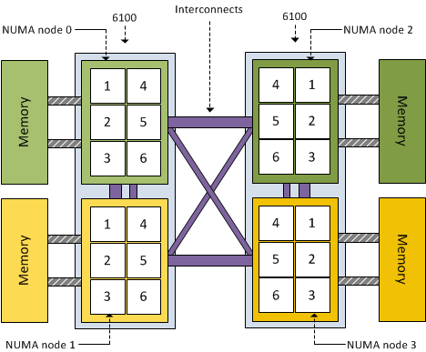

研究方向
主要从事云计算与大数据分析、数据库与信息检索、非结构数据管理的研究工作。论文发表在《IEEE TKDE》（CCF A类期刊）、《计算机学报》、《软件学报》、《计算机研究与发展》, ICDE（CCF A类会议）, DASFAA(CCF B) 、APWEB, WAIM, NDBC 等国内外知名期刊和高水平会议上。
大数据分析处理技术
研究大规模数据集上的近似查询处理技术，包括分布式环境下的查询优化和新硬件环境下的查询优化等关键技术。
大数据分析技术的行业应用
在物联网、民航飞行品质监控领域开展大数据分析技术应用，包括相似性搜索、模式挖掘、异常检测等。
非结构化数据管理和分析
研究文本、图像等非结构化数据的管理和分析技术，包括数据抽取、知识图谱构建、深度学习技术的应用等。
时间序列大数据分析
研究时间序列数据的相似性搜索、模式挖掘、异常检测等问题，开发高效的分布式处理算法和系统。重点关注航空、金融等领域的实际应用。
代表性成果：
- Multivariate Time Series Data Imputation Using Attention-Based Mechanism (Neurocomputing 2023)
- QAR Data Imputation using Improved GAN with Self-Attention Mechanism (Big Data Mining and Analytics 2023)
中医药药方数据挖掘
利用数据挖掘和机器学习技术，对中医药处方数据进行分析，研究中药配伍规律，开发智能处方推荐系统，促进中医药知识的传承与创新。
代表性成果：
- Chinese Medicine Prescription Recommendation Using Generative Adversarial Network (IEEE Access 2022)
- Data Exploration and Mining on Traditional Chinese Medicine (CCF BigData 2021)


基于新硬件的查询处理技术
研究如何利用新型硬件(如NUMA架构、NVM存储等)特性优化数据库系统的查询处理性能，设计适应新硬件特点的数据结构和算法。
相关项目：
- 面向认知物联网的频谱大数据处理关键技术研究（自然基金面上项目）
- 云计算环境下海量RDF数据管理系统核心技术研究（自然基金面上项目）